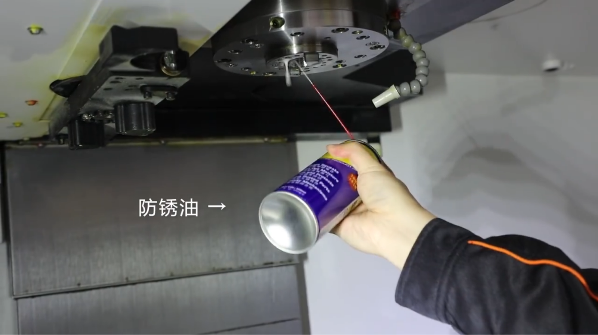
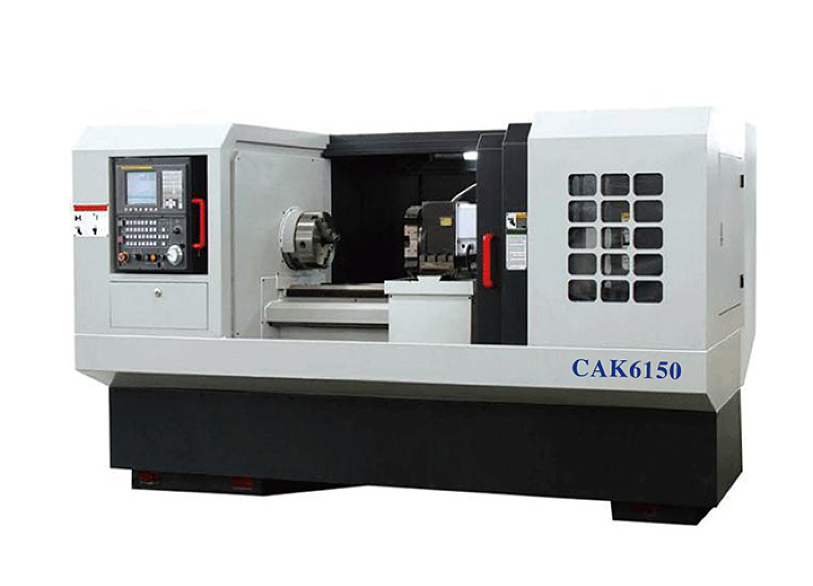
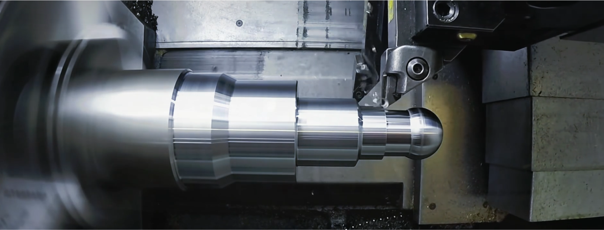
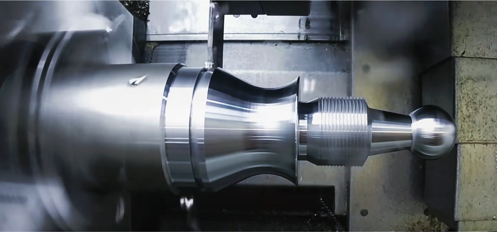
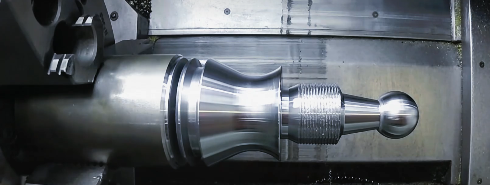

Computer-controlled cutting
*CNC cutting
*How to keep safety

3、Regular fine inspection: for example, check whether the oil rubbing
plate on the machine tool guideway is worn out, whether the lubricant
and coolant status is normal, if there is any problem, it should be
replaced or supplemented in time.
4, equipment protection: for rotating cutting tools, belts and pulleys, high-voltage circuits, noise and compressed air and other safety hazards brought about by the preventive protection measures should be taken.

4, equipment protection: for rotating cutting tools, belts and pulleys, high-voltage circuits, noise and compressed air and other safety hazards brought about by the preventive protection measures should be taken.
*Learn CNC

CNC machine tool equipment improves productivity and product quality.
Compared with traditional processing methods, CNC equipment is
characterized by high precision and high efficiency. Through digital
control, CNC equipment can accurately control each processing link,
reduce human error and ensure the stability and consistency of product
quality. This not only improves the production efficiency, but also
reduces the scrap rate and saves cost for the enterprise.
Promoted the transformation and upgrading of the manufacturing industry. With the increasing demand for consumer personalization and diversification of products, the traditional processing methods have been unable to meet the market demand. And CNC equipment can realize the processing of complex shapes and fine features through programming and software control, providing strong support for the transformation and upgrading of the manufacturing industry. At the same time, the degree of intelligence and automation of CNC equipment is getting higher and higher, making the manufacturing industry better able to adapt to market changes and user needs.
It helps to improve the competitiveness of enterprises. In the context of globalized competition, the competitiveness of enterprises depends on the quality and innovation of products. And CNC equipment, as a core tool of modern industrial manufacturing, can help enterprises quickly respond to market changes and launch competitive products. At the same time, through the introduction of advanced CNC equipment and technology, enterprises can also improve their own technical level and research and development capabilities, so as to better respond to market challenges and opportunities.
Promoted the transformation and upgrading of the manufacturing industry. With the increasing demand for consumer personalization and diversification of products, the traditional processing methods have been unable to meet the market demand. And CNC equipment can realize the processing of complex shapes and fine features through programming and software control, providing strong support for the transformation and upgrading of the manufacturing industry. At the same time, the degree of intelligence and automation of CNC equipment is getting higher and higher, making the manufacturing industry better able to adapt to market changes and user needs.
It helps to improve the competitiveness of enterprises. In the context of globalized competition, the competitiveness of enterprises depends on the quality and innovation of products. And CNC equipment, as a core tool of modern industrial manufacturing, can help enterprises quickly respond to market changes and launch competitive products. At the same time, through the introduction of advanced CNC equipment and technology, enterprises can also improve their own technical level and research and development capabilities, so as to better respond to market challenges and opportunities.
*CNC machine type
CNC machine tools is a digital control machine tools (Computer
numerical control machine tools), is a program control system equipped
with automated machine tools. CNC machine tools realize the
complexity, precision, small batch, multi-species parts processing, is
a flexible, high-performance automated machine tools, representing the
direction of development of modern machine tool control technology.
There are many types of CNC machine tools, which can be categorized in different ways: according to the classification of process use, according to the classification of motion control mode and servo control mode, and so on.
There are many types of CNC machine tools, which can be categorized in different ways: according to the classification of process use, according to the classification of motion control mode and servo control mode, and so on.
*CNC lathe
CNC lathe is one of the more widely used CNC machine tools. It is
mainly used for shaft parts or disk parts of the internal and
external cylindrical surface, any cone angle of the internal and
external conical surface, complex rotary internal and external
surfaces and cylindrical, tapered threads and other cutting, and can
be grooving, drilling, reaming, reaming and boring.
Application :CNC lathe is a high-precision, high-efficiency machining equipment, widely used in many fields, including automotive manufacturing, aerospace manufacturing, mold and die manufacturing, electronic equipment manufacturing, medical device manufacturing and energy equipment manufacturing.
Application :CNC lathe is a high-precision, high-efficiency machining equipment, widely used in many fields, including automotive manufacturing, aerospace manufacturing, mold and die manufacturing, electronic equipment manufacturing, medical device manufacturing and energy equipment manufacturing.

CAK6150 CNC lathe


C-type external round

V-shaped roughing cutter

V-shaped external cutter

Threaded tool lathe

slotter

Final product
*Make sure the machine
Reason for selection
Key points for selecting CNC milling machines
1.Machine specifications: Ensure that the selected CNC milling
machine's workbench size and spindle power can meet the
machining requirements of the gears.
2.CNC system: Choose a stable and reliable CNC system to ensure machining accuracy and stability.
3.Tools and fixtures: Select appropriate cutting tools and fixtures based on the material and size of the gears to ensure machining quality and efficiency.
4.Processing plan: Write appropriate processing programs, optimize machining paths and cutting parameters to improve machining efficiency and accuracy.
2.CNC system: Choose a stable and reliable CNC system to ensure machining accuracy and stability.
3.Tools and fixtures: Select appropriate cutting tools and fixtures based on the material and size of the gears to ensure machining quality and efficiency.
4.Processing plan: Write appropriate processing programs, optimize machining paths and cutting parameters to improve machining efficiency and accuracy.
The CNC milling machine in the video, as a tool, provides many
conveniences for the processing personnel.
*Make sure the material
Material Definition
The reason for choosing stainless steel as the raw material
- Corrosion resistance: Stainless steel has excellent corrosion resistance and can maintain constant corrosion resistance in air or corrosive media.
- High strength and toughness: Stainless steel exhibits high strength and toughness over a wide temperature range, enabling it to withstand various stresses and impacts.
- Processing characteristics: Although stainless steel may encounter some problems during the processing, such as severe work hardening, high cutting force, high cutting temperature, and easy tool wear, it can adapt to higher cutting speeds and optimize the processing by selecting appropriate tools, processing parameters, and surface treatment methods.
- Environmental protection and recyclability: The 100% recyclability of stainless steel provides a new way for environmental protection, which meets the requirements of modern manufacturing for sustainable development.
*Laser cutting

Laser cutting is the use of focused high power density laser beam
irradiation workpiece, so that the irradiated material rapidly
melting, vaporization, ablation, or to reach the ignition point, and
at the same time, with the help of coaxial with the beam of
high-speed airflow blowing off the molten material, so as to achieve
the workpiece cut. Laser cutting belongs to one of the thermal
cutting methods.
*How to keep safety
Overall environmental protection
Environmental settings: When using laser cutting machine,
corners and baffles should be set up in the cutting area to
avoid the laser's rebound from
harming the human body.
Installation of protective facilities: the use of laser must be equipped with professional protective equipment, such as ultraviolet, laser and electromagnetic radiation protection devices.
Maintain the equipment: Regularly check and maintain the laser cutting machine to ensure that the equipment can operate normally and reduce the occurrence of accidents.
Installation of protective facilities: the use of laser must be equipped with professional protective equipment, such as ultraviolet, laser and electromagnetic radiation protection devices.
Maintain the equipment: Regularly check and maintain the laser cutting machine to ensure that the equipment can operate normally and reduce the occurrence of accidents.
Personal protection
Wear protective eyewear:
the operator must wear qualified laser protective eyewear,
which can effectively prevent the laser beam from harming the
eyes.
Wear protective gloves: During operation, protective gloves should be worn to avoid injury to the hands from laser radiation.
Wear suitable protective clothing: suitable protective clothing is required to prevent laser burns or burns to the skin.
Wear protective gloves: During operation, protective gloves should be worn to avoid injury to the hands from laser radiation.
Wear suitable protective clothing: suitable protective clothing is required to prevent laser burns or burns to the skin.
Machine operation
Caution: When using the laser cutting machine, it must be operated
cautiously to avoid harm caused by accidental misoperation.
Cutting area protection: For the cutting area, it should be operated in strict accordance with the operation procedure to prevent the laser from irradiating the irrelevant area.
Standardized operation process: In the operation process, the laser cutting machine must be operated in accordance with the standardized process, and the operation process or operation parameters must not be changed at will.
Cutting area protection: For the cutting area, it should be operated in strict accordance with the operation procedure to prevent the laser from irradiating the irrelevant area.
Standardized operation process: In the operation process, the laser cutting machine must be operated in accordance with the standardized process, and the operation process or operation parameters must not be changed at will.
*Different kind of material which can be manufacture by laser
cutting
stainless steels
Acrylic
Glass
Acrylic
Glass
stainless steels cutting
1. Preparation: Determine the cutting size, workpiece surface
cleanliness and flatness, and choose suitable cutting machine and
equipment.
2. Setting parameters: Adjust the laser power, scanning speed, gas flow and other parameters according to the material thickness, material, cutting shape, processing requirements and other factors.
3. Preheating and pre-melting: Before the laser beam irradiates the workpiece, inert gas is sprayed to the surface of the workpiece through the nozzle to increase the surface temperature and reduce the influence of the laser beam on the workpiece when cutting.
4. Cutting and processing: The laser beam focuses on the surface of the workpiece, melting and vaporizing the stainless steel material through the action of high temperature and high energy to form the cutting opening.
5. Cleaning and processing: Remove the iron filings, oxides and other impurities generated during the cutting process, and polish and paint the cutout to improve the surface quality.
2. Setting parameters: Adjust the laser power, scanning speed, gas flow and other parameters according to the material thickness, material, cutting shape, processing requirements and other factors.
3. Preheating and pre-melting: Before the laser beam irradiates the workpiece, inert gas is sprayed to the surface of the workpiece through the nozzle to increase the surface temperature and reduce the influence of the laser beam on the workpiece when cutting.
4. Cutting and processing: The laser beam focuses on the surface of the workpiece, melting and vaporizing the stainless steel material through the action of high temperature and high energy to form the cutting opening.
5. Cleaning and processing: Remove the iron filings, oxides and other impurities generated during the cutting process, and polish and paint the cutout to improve the surface quality.

Acrylic cutting
1. Preparation: Check whether the laser cutting machine works properly,
adjust the cutting parameters to ensure the cutting quality.
2.Measuring and marking:Use ruler and pencil to measure and mark on the acrylic board to determine the position and size to be cut.
3. Fix the acrylic board: Fix the acrylic board on the working table of the laser cutting machine to ensure safety and reliability.
4. Set cutting parameters: according to the thickness of the acrylic plate and cutting requirements, set the laser cutting parameters, including power, speed, etc..
5. Start cutting: Start the laser cutting machine, let it cut according to the preset parameters.
6. Observe the cutting process: During the cutting process, observe the cutting status to ensure the cutting quality.
7. Remove the cut pieces: After the cutting is completed, carefully remove the cut acrylic pieces.
8.Remove residue:Clean up the residue in the cutting area to keep the working environment tidy.
2.Measuring and marking:Use ruler and pencil to measure and mark on the acrylic board to determine the position and size to be cut.
3. Fix the acrylic board: Fix the acrylic board on the working table of the laser cutting machine to ensure safety and reliability.
4. Set cutting parameters: according to the thickness of the acrylic plate and cutting requirements, set the laser cutting parameters, including power, speed, etc..
5. Start cutting: Start the laser cutting machine, let it cut according to the preset parameters.
6. Observe the cutting process: During the cutting process, observe the cutting status to ensure the cutting quality.
7. Remove the cut pieces: After the cutting is completed, carefully remove the cut acrylic pieces.
8.Remove residue:Clean up the residue in the cutting area to keep the working environment tidy.
Glass cutting
1. Confirm the type of glass and obtain information on the material
and thickness of the glass. 2.
2. Prepare fine dust cloths and items to wipe the glass surface to ensure that the surface of the glass is clean.
3. Post signs and set up isolation zones in the cutting area to remind the surrounding personnel to pay attention to safety.
4. Design and adjust the cutting pattern, and import the required cutting pattern into the laser cutting machine.
5. Fix the glass on the cutting table and adjust the angle and position.
6. Start the laser cutting through the control system of the laser cutting machine.
7. According to the set cutting pattern, the laser cutting machine will automatically carry out cutting until the whole pattern is completed
8. Turn off the light cutter and wait for the cut glass to cool down.
9. Remove the remaining edges and rusty places around the cutting pattern to ensure the glass surface is smooth.
10. Grind or polish around the cutting pattern to improve the appearance of the glass.
2. Prepare fine dust cloths and items to wipe the glass surface to ensure that the surface of the glass is clean.
3. Post signs and set up isolation zones in the cutting area to remind the surrounding personnel to pay attention to safety.
4. Design and adjust the cutting pattern, and import the required cutting pattern into the laser cutting machine.
5. Fix the glass on the cutting table and adjust the angle and position.
6. Start the laser cutting through the control system of the laser cutting machine.
7. According to the set cutting pattern, the laser cutting machine will automatically carry out cutting until the whole pattern is completed
8. Turn off the light cutter and wait for the cut glass to cool down.
9. Remove the remaining edges and rusty places around the cutting pattern to ensure the glass surface is smooth.
10. Grind or polish around the cutting pattern to improve the appearance of the glass.